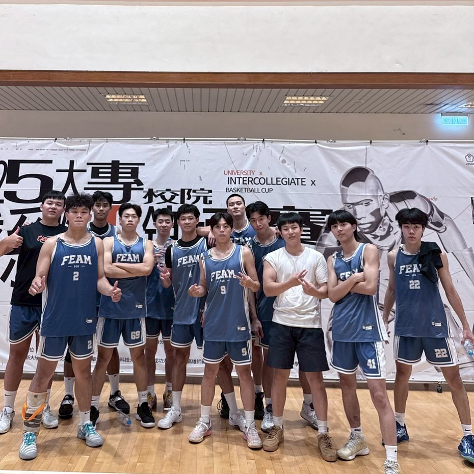
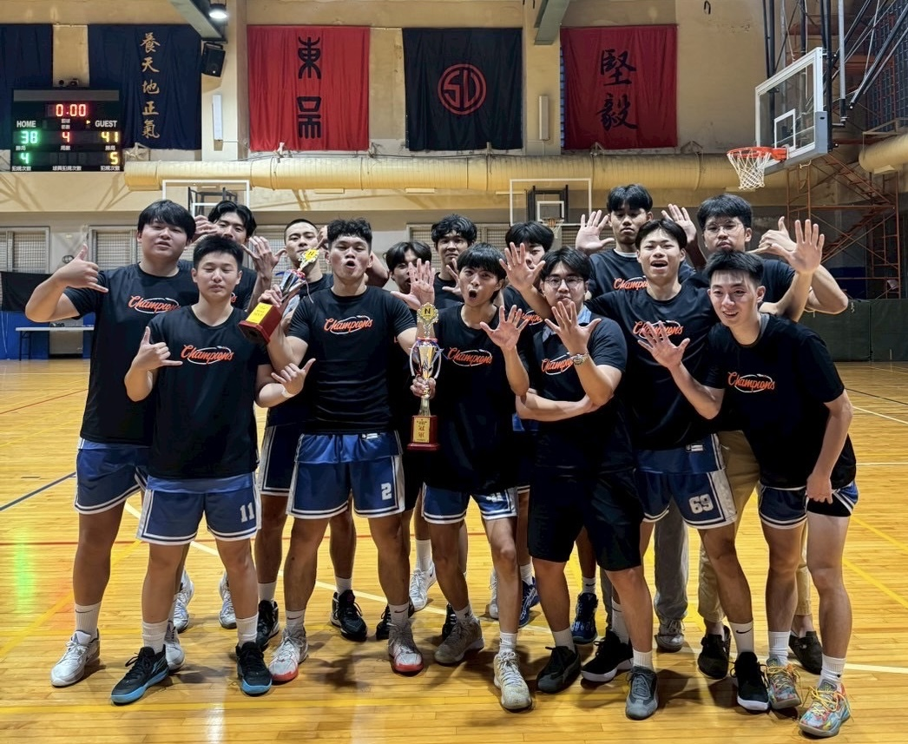

Extracurricular Activities
Basketball
-
Department Basketball Team Vice Captain
Dept. of Financial Engineering and Actuarial Mathematics, Soochow University
- Champion, Statistics Graduate Cup (統計研究所盃)
- Champion, National Interdepartmental Cup - North District I (全國系際盃北一區)
- Champion, Northern Basketball League - NBL (北區籃球聯盟)
- Champion, National Finance and Banking Cup (大財盃)
- Champion, National Mathematics and Statistics Cup (大數盃)

